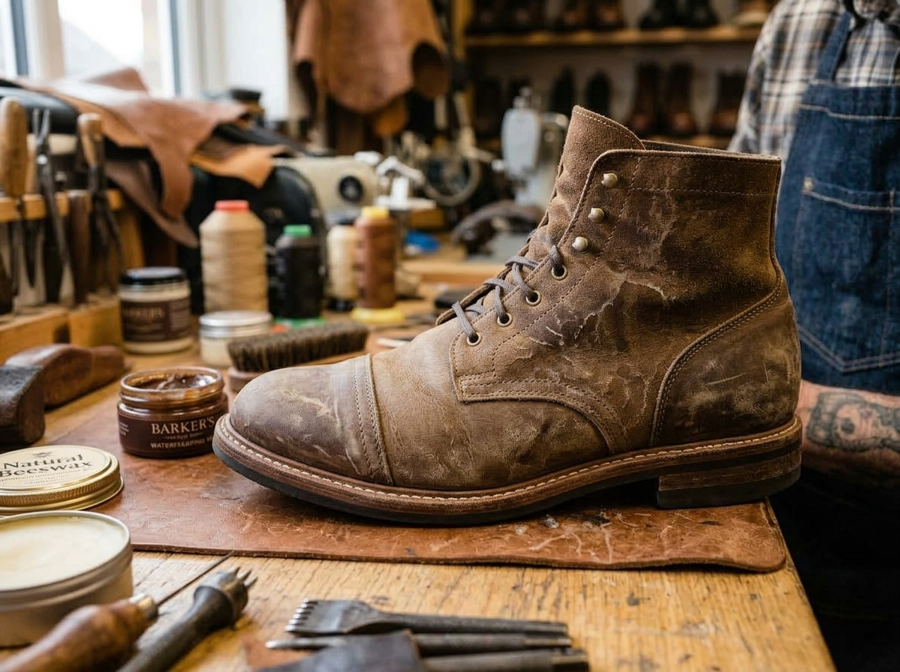

Repair Comparisons
Filter by Repair Type
Use the filters below to browse results by category. Drag the slider on each card to compare before and after.


Full Sole Replacement
Worn-through leather and rubber sole completely rebuilt with new midsole and heavy-duty Vibram lugged sole.


Leather Restoration & Polish
Cleaning, conditioning, colour restoration and mirror polish brought dull, scuffed leather back to a rich shine.


Heel Block Rebuilding
Heavily worn heel block rebuilt to original height using stacked leather lifts. New heel tip fitted and edge dressed to match.


Full Seam Repair
Torn upper seam re-stitched from quarter to heel using matched waxed linen thread. Leather conditioned after repair.


Professional Shoe Cleaning
Heavily soiled footwear cleaned using specialist cleaner and brush. Salt marks and mud residue removed throughout.


Waterproofing & Conditioning
Conditioning and wax-based waterproofing restored the leather and protected it for outdoor wear.
Ready for a Transformation?
Your shoes deserve the same treatment.
Every pair in this gallery arrived worn and left restored. Yours can too.